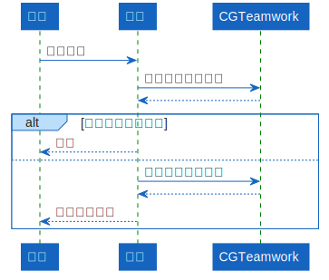

CGTeamwork
从 CGTeamwork 进行收集。

来源格式: cgteamwork:{项目}:{流程}:{任务名称}
如果提交文件无法访问，将静默跳过。
最大任务量限制
为避免单个请求耗尽服务器资源，如果超过 环境变量 设置的最大任务量将直接报错。
CGTeamwork 自带每请求最大范围 5000 条数据的限制，所以最大任务量设置超过 5000 效果等于 5000。
流程覆盖
默认查询 CGTeamwork 相同名称的流程，但可通过 环境变量 设置覆盖。
比如为灯光流程同时收集灯光和渲染流程的文件，收集到的文件将属于同一个收集。
自动标签
会自动更新以下标签，并移除旧的匹配标签：
type:{文件类型}
artist:{制作者显示名称}
status:{阶段名称}:{阶段状态}
cgteamwork:{值为Y的复选框字段}